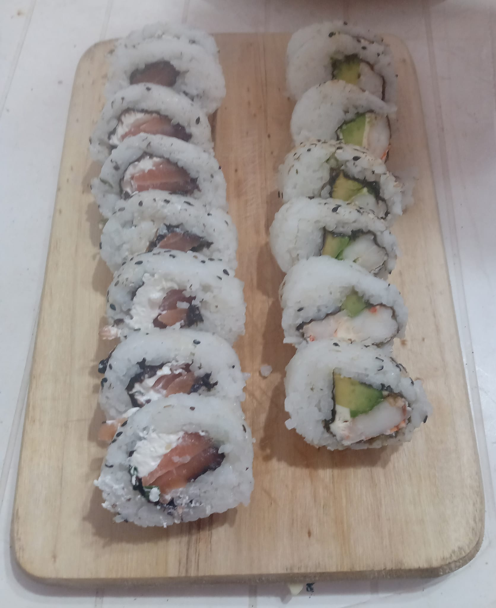
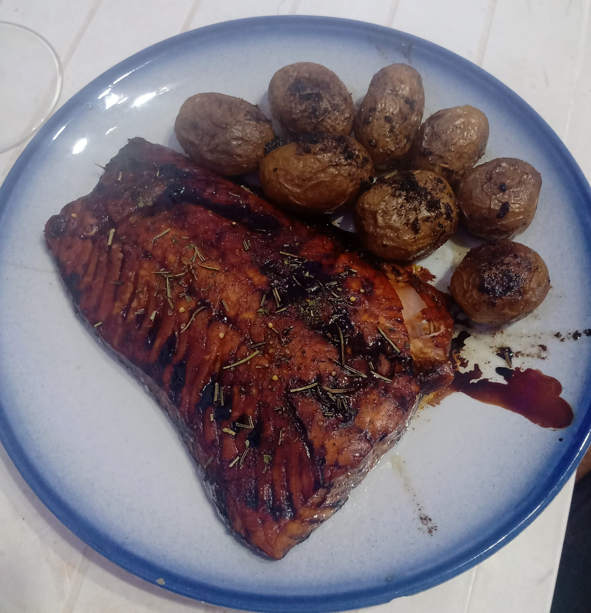
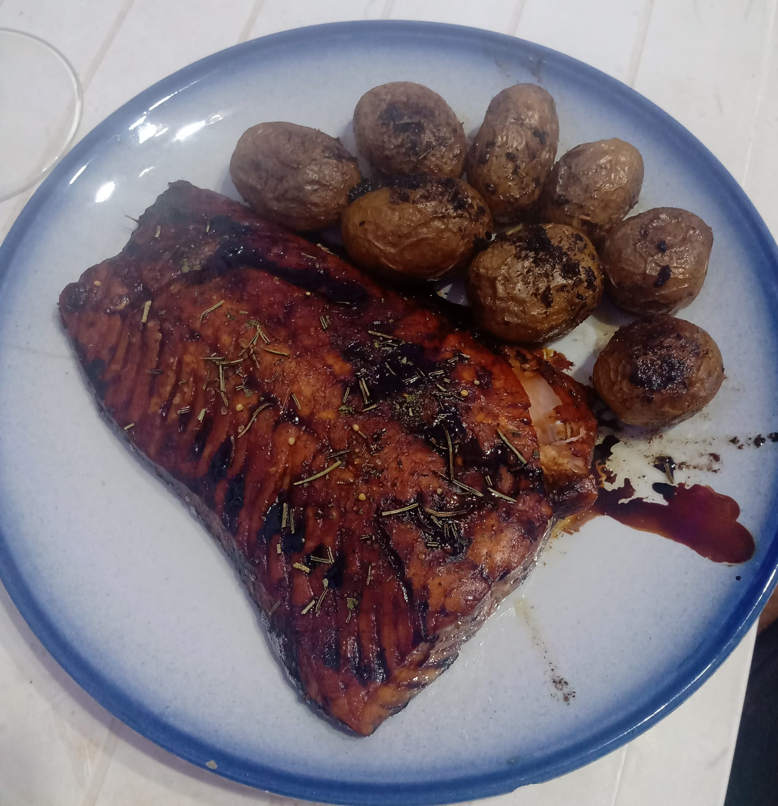
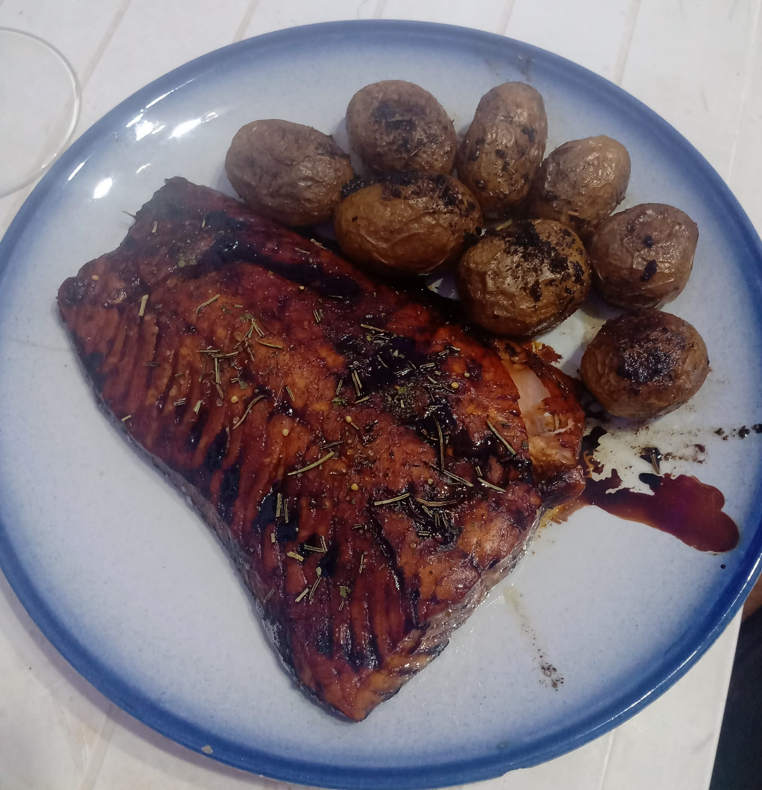

Curiosidades sobre mi:
Nacido en el mes de abril, del signo Aries, primero actuo luego pienso.
Me siento cómodo liderando y tomando la iniciativa, siempre buscando el lado positivo de las situaciones.
Me apasionan los desafíos y no temo competir enérgicamente por mis metas. Sin embargo, a veces tengo dificultades para mantener la paciencia.
Me siento cómodo liderando y tomando la iniciativa, siempre buscando el lado positivo de las situaciones.
Me apasionan los desafíos y no temo competir enérgicamente por mis metas. Sin embargo, a veces tengo dificultades para mantener la paciencia.
Mis series favoritas
- Game of thrones
- El señor de los anillos
- Harry Potter
Lugares preferidos:
La playa es sin duda mi lugar preferido, cualquier lugar que haga calor y tenga playa es mi lugar en el mundo, arena, mar, agua fria o caliente, unos daiquiris y buena compania.

Hobbies
Me gusta cocinar y compartir lo que hago con amigos, encontrar ese punto en el que disfrutan lo que cocino.Mi especialidad son las pastas o comida japonesa, desde sushi hasta salteados con salmón.

 

